Test integration over nuisance parameters
Based on Example 10.1 in Pawitan, In All Likelihood , which in turn is based on Neyman & Scott (1948), doi:10.2307/1914288.
Consider a set of samples 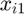 and 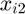 from 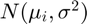, 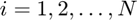, where the parameter of interest is 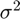. The maximum likelihood estimate is inconsistent, with

Here, we use a Hamiltonian Monte Carlo sampler to integrate out the nuisance parameter vector 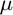 and obtain an accurate estimate of .
Contents
Preliminaries
Read in data
Dat = csvread('pawdata.txt');
mu = Dat(:,2);
X = Dat(:,3:4);
xbar = Dat(:,5);
trueSigma = 1;
Define prior probability density
We choose broad normal distributions as relatively uninformative priors for both 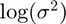 and .
LogVariancePriorMean = 0; LogVariancePriorSigma = 2; MeanPriorMean = 0; MeanPriorSigma = 20;
Define log posterior
logpdf = @(P) logPosterior(P, X,... LogVariancePriorMean, LogVariancePriorSigma, ... MeanPriorMean, MeanPriorSigma);
Create HMC sampler
logSigmaEst = log(mean(std(X, 0, 2)));
muEst = xbar;
startpoint = [logSigmaEst; muEst];
smp = hmcSampler(logpdf, startpoint, 'NumSteps',50);
Estimate MAP point
[MAPpars,fitInfo] = estimateMAP(smp,'VerbosityLevel',0); MAPlogSigma = MAPpars(1); MAPmu = MAPpars(2:end); plot(fitInfo.Iteration,fitInfo.Objective,'ro-'); xlabel('Iteration'); ylabel('Negative log density');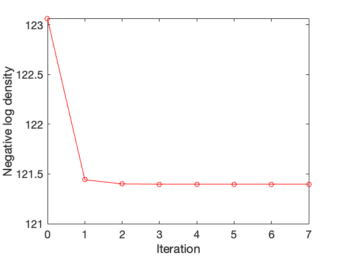
Tune sampler
[smp,tuneinfo] = tuneSampler(smp,'Start',MAPpars); figure; plot(tuneinfo.StepSizeTuningInfo.StepSizeProfile); xlabel('Iteration'); ylabel('Step size'); fprintf("accratio = %.4f\n", tuneinfo.StepSizeTuningInfo.AcceptanceRatio)
accratio = 0.6400

Draw samples
NumChains = 4; chains = cell(NumChains,1); Burnin = 500; NumSamples = 1000; for c = 1:NumChains if (c == 1) level = 1; else level = 0; end chains{c} = drawSamples(smp,'Start',MAPpars + randn(size(MAPpars)), ... 'Burnin',Burnin,'NumSamples',NumSamples, ... 'VerbosityLevel',level,'NumPrint',300); end
|==================================================================================| | ITER | LOG PDF | STEP SIZE | NUM STEPS | ACC RATIO | DIVERGENT | |==================================================================================| | 300 | -1.340758e+02 | 6.639e-01 | 3 | 8.433e-01 | 0 | | 600 | -1.350505e+02 | 1.837e-02 | 3 | 8.550e-01 | 0 | | 900 | -1.370153e+02 | 3.860e-01 | 7 | 8.478e-01 | 0 | | 1200 | -1.307006e+02 | 6.639e-01 | 2 | 8.508e-01 | 0 | | 1500 | -1.356701e+02 | 1.811e-01 | 4 | 8.553e-01 | 0 |
Examine convergence diagnostics
diags = diagnostics(smp,chains); truePars = [log(trueSigma^2);mu]; disp(diags) disp(truePars)
Name Mean MCSE SD Q5 Q95 ESS RHat
_______ _________ ________ _______ _________ ________ ______ ______
{'x1' } -0.056675 0.011024 0.331 -0.57984 0.52898 901.52 1.0031
{'x2' } -0.42656 0.013588 0.73029 -1.6134 0.74786 2888.8 1.0015
{'x3' } 3.3703 0.013978 0.70814 2.1925 4.5291 2566.7 1.0006
{'x4' } 2.2575 0.012798 0.69394 1.1201 3.4247 2940.2 1.0013
{'x5' } -5.9854 0.013078 0.70269 -7.1387 -4.8798 2887.1 1.0006
{'x6' } 3.416 0.013545 0.72644 2.2052 4.5954 2876.4 1
{'x7' } -3.2143 0.012933 0.69915 -4.3569 -2.1052 2922.3 1
{'x8' } -2.6146 0.014424 0.71442 -3.7482 -1.4257 2453.3 1.0014
{'x9' } 6.704 0.012287 0.68225 5.6018 7.807 3083.3 1
{'x10'} -0.93691 0.012904 0.72251 -2.1179 0.25175 3134.9 1
{'x11'} -3.9466 0.012037 0.69014 -5.0898 -2.7978 3287.3 1.0001
{'x12'} 7.8328 0.013947 0.72322 6.6609 9.0276 2689 1.0008
{'x13'} 0.33647 0.012841 0.72234 -0.8221 1.5114 3164.2 1.0003
{'x14'} 4.7587 0.012378 0.67534 3.6306 5.8772 2976.8 1
{'x15'} 4.8444 0.013404 0.724 3.6385 6.001 2917.5 1
{'x16'} -4.6148 0.013341 0.71928 -5.8052 -3.4583 2906.9 1
{'x17'} -7.0431 0.012513 0.69419 -8.1727 -5.8771 3077.6 1.0002
{'x18'} -1.6608 0.012191 0.7004 -2.8266 -0.51616 3300.7 1
{'x19'} -7.7642 0.012109 0.6834 -8.8697 -6.6801 3185.1 1
{'x20'} -6.2965 0.012401 0.69676 -7.455 -5.1618 3156.7 1.0005
{'x21'} 1.1104 0.013371 0.73668 -0.060796 2.3132 3035.6 1.0005
0
0.8800
2.5100
1.7400
-6.7400
1.4200
-3.3400
-2.7200
6.8900
0.6700
-4.1800
8.4300
0.1500
3.8900
4.5200
-4.0500
-6.9500
-2.6100
-6.5200
-6.0600
0.9200
Visualize samples
figure;
plot(chains{1}(:,1))
title("log(\sigma^2), Chain 1")
figure;
plot(chains{1}(:,2))
title("\mu_1, Chain 1")
concatenatedSamples = vertcat(chains{:});
figure;
histogram(exp(concatenatedSamples(:,1)))
xline(trueSigma^2,'r-','LineWidth',1)
xline(mean(exp(concatenatedSamples(:,1))),'k-','LineWidth',1)
xlabel("\sigma^2")
ylabel("Frequency")
Fig = figure;
Fig.Position = Fig.Position.*[0.5 0.5 1.5 1.5];
N = length(mu);
ax = gobjects(N,1);
for i = 1:N
ax(i) = subplot(4,5,i);
histogram(concatenatedSamples(:,i+1))
xline(mu(i),'r-','LineWidth',1)
xline(mean(concatenatedSamples(:,i+1)),'k-','LineWidth',1)
xlim([-10 10]);
ax(i).XTickLabel = {};
ax(i).YTickLabel = {};
end
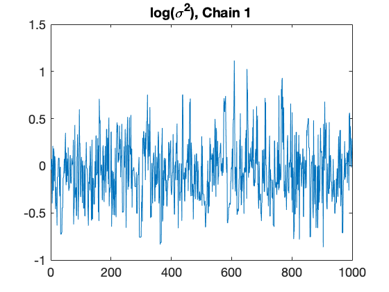 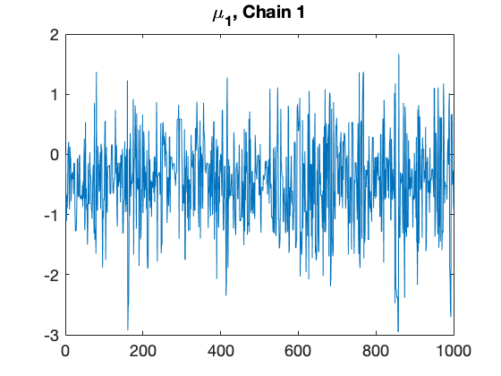 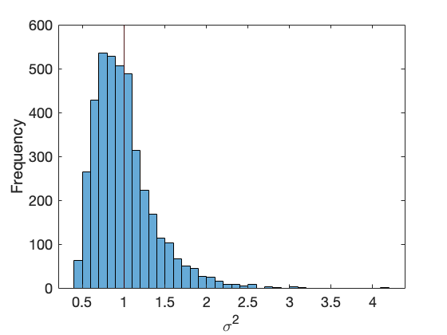 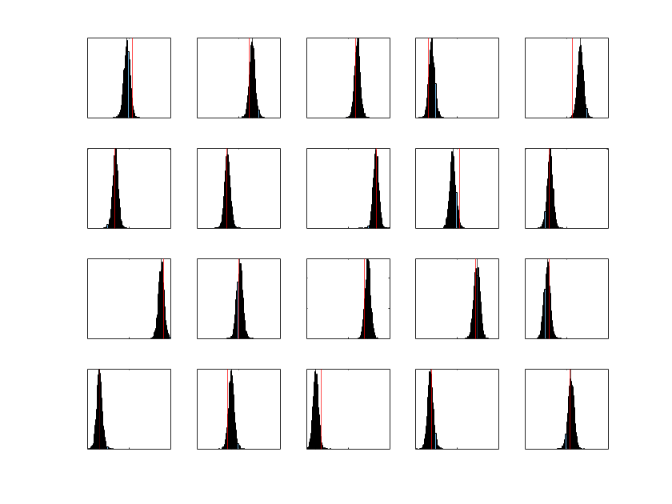